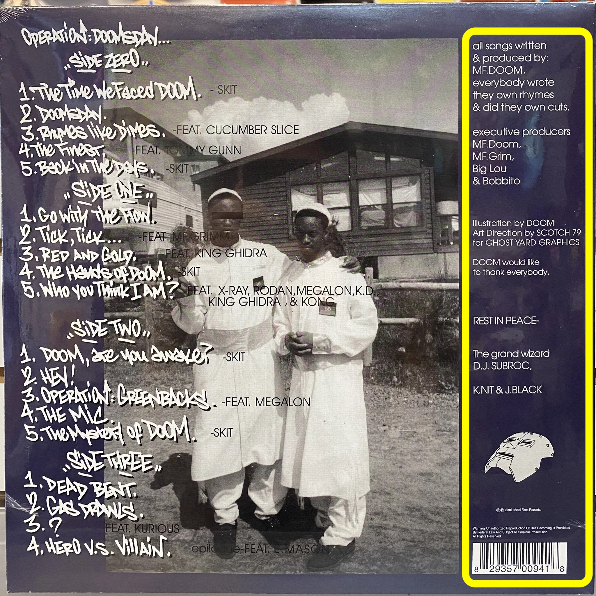

The context gives information a richer identity and forms the foundation for its relationship with other data. A way to know some things surrounding a piece of information, so that we may have a better idea of what that information is for when we go looking for it.
Scroll down
The Mona Lisa is a well-known oil painting by Leonardo da Vinci, maybe the most well-known picture in the world.
it was painted between 1503 and 1519 and is presently housed in Paris' Louvre Musuem. Many explanations have been proposed to
explain the art piece's fame, but most strong arguments claim that there is no single cause. The painting has become a source of
ongoing research and curiosity due to her strange smile and her unknown identity. According to some researchers, her smile is abstract,
one half of Mona Lisa's smile communicates contentment while the other half lacks emotion. Other say the enigmatic smile is not a smile
at all, but rather a solemn expression whose appearance is characteristic of people who have lost their front teeth.
Metadata:
"Data about Data"
Like a library catalog but for all types of objects and information. Metadata could also include the weight, condition, and thickness
of the book you are searching for. The more descriptive our metadata becomes the more quickly we can access th efiles of information we are looking
for. Librarians love metadata!
There are several different types of metadata;
Descriptive metadata, Structural metadata, Administrative metadata, and something called Data Pointillism.
Descriptive metadata:
You start with the descriptive metadata, this is the basic information:
The who, The what, The where, The when
Structural metadata:
The information about how an object should be categorized so that it fits into a larger system with other
objects; structural metadata establishes a relationship with other files so that they can be organized and
used in interesting new ways. Like how a song or painting structure can be used to tell a story about art.
Administrative metadata:
Information about the history of an object. Who used to own it, and what can be done with it. THings like rights, licenses, and permissions.
This information is helpful for people managing and taking care of an object.
Pointillism data:
Individual specks of paint combine to form a single color whne seen from a distance.
Pointillism describes that one point of data only gains its full meaning when it's put in the right context.
Let's take this vinyl record for example:
Descriptive data can be shown all over given this record as a piece of information. Structural data is clearly labeled on the
front in order for it to be categorized.
And administrative data can be found on the back of the record cover in the fine print just above the barcode.

The pointillism data in this piece of information can only be identified by true fans of hte material or professional art critics
whose job is to decipher meaningful messages within the broader context of whole images.
This is true for every piece of art in existence.
The examination of art has been known to be a speculative process. We watch and wait ofr others' opinions or insight
on what is to be labeled as the true diagnosis of the image or message received. This can also be accomplished by simply
asking the creator of said art, but many times that is not a realistic option when observing art of the deceased. So trial and error
are said to be the true judge of authenticity.
Soon this relay of speculative information is to change with the arrival of new Ai and machine learning technology
that will be enveloped within the new web 3.0.